1. PORTADA Y PRELIMINARES
1.1 Información del Sistema
| Concepto | Detalle |
|---|---|
| Nombre del Sistema | Sistema de Administración de Unidades Horizontales |
| Versión | 1.0.0 |
| Nombre del Condominio | Condominio Las Margaritas |
| Fecha de Creación | Marzo 2026 |
1.2 En Este Manual
Este documento contiene instrucciones detalladas para el uso del Sistema de Administración de Unidades Horizontales. Incluye guías paso a paso para cada rol de usuario (Administrador, Propietario y Residente) y todas las funcionalidades disponibles en la plataforma.
2. INTRODUCCIÓN
2.1 Propósito del Documento
Este manual de usuario ha sido elaborado para guiar a todos los usuarios del Sistema de Administración de Unidades Horizontales en el correcto uso de la plataforma. Su objetivo es facilitar el aprendizaje autónomo y resolver dudas frecuentes sobre la navegación, operación y funcionalidades disponibles según el perfil de cada usuario.
2.2 Contexto y Justificación del Sistema
El Sistema de Administración de Unidades Horizontales fue desarrollado para resolver cuatro problemas críticos en la gestión de condominios:
Problema 1: Errores Humanos
- Registros incorrectos de pagos y residentes
- Confusión en la asignación de unidades
- Pérdida de documentación importante
Problema 2: Pérdida de Tiempo
- Procesos manuales y repetitivos
- Búsqueda difícil de información histórica
- Falta de reportes centralizados
Problema 3: Falta de Transparencia
- Dificultad para consultar estados de cuenta
- Comunicación deficiente entre administración y residentes
- Falta de claridad en la información financiera
Problema 4: Dificultades de Comunicación
- Comunicados no llegan a todos los residentes
- No hay registro de avisos importantes
- Información fragmentada y desorganizada
2.3 Beneficios Principales del Sistema
✅ Transparencia: Acceso en tiempo real a información financiera y de residentes
✅ Comunicación centralizada: Todos los comunicados en un solo lugar
✅ Seguridad: Datos protegidos con autenticación por token JWT
✅ Reportes: Generación automática de informes
✅ Acceso 24/7: Plataforma disponible en cualquier momento
✅ Control de roles: Cada usuario solo ve la información que le corresponde
2.4 Alcance del Sistema
El sistema gestiona los siguientes procesos:
- Gestión de Residentes y Propietarios: Registro, actualización y estado de residentes
- Administración de Unidades: Creación, edición y seguimiento de unidades habitacionales
- Control de Pagos y Facturas: Registro de pagos, generación de facturas, seguimiento de cartera
- Comunicaciones: Creación y distribución de comunicados a residentes y propietarios
- Gestión de Empleados: Registro de empleados, cargos y salarios
- Contabilidad: Registro de ingresos y egresos del condominio
- Consultas: Acceso a estados de cuenta y comunicados
2.5 Público Objetivo del Manual
Este manual está dirigido a:
- Administradores del Sistema: Personal encargado de la administración integral del condominio
- Propietarios: Copropietarios que desean consultar el estado de sus pagos y comunicados
- Residentes: Arrendatarios que necesitan ver comunicados e información de su unidad
- Empleados Administrativos: Personal de apoyo en tareas de registro y consulta
3. DESCRIPCIÓN GENERAL DEL SISTEMA
3.1 ¿Qué es el Sistema?
El Sistema de Administración de Unidades Horizontales es una plataforma web integrada que centraliza toda la información y procesos administrativos de un condominio. Mediante una interfaz amigable e intuitiva, permite:
- Gestionar residentes y propietarios
- Administrar unidades habitacionales
- Controlar pagos y generar facturas
- Comunicarse con todos los residentes
- Registrar ingresos y egresos
- Generar reportes automáticos
- Acceder a información desde múltiples dispositivos
3.2 Roles de Usuario y Sus Diferencias
El sistema cuenta con tres roles principales, cada uno con permisos y funcionalidades específicas:
3.2.1 Tabla Comparativa de Roles
| Funcionalidad | Administrador | Propietario | Residente |
|---|---|---|---|
| Ver Dashboard | ✅ Completo | ✅ Simplificado | ✅ Limitado |
| Gestionar Residentes | ✅ Ver/Crear/Editar/Eliminar | ❌ | ❌ |
| Gestionar Unidades | ✅ Ver/Crear/Editar/Eliminar | ✅ Consultar sus unidades | ❌ |
| Gestionar Pagos | ✅ Ver/Crear/Editar/Eliminar | ✅ Consultar sus pagos | ✅ Consultar y realizar pagos |
| Ver Comunicados | ✅ Ver/Crear/Archivar | ✅ Ver | ✅ Ver |
| Gestionar Empleados | ✅ Ver/Crear/Editar/Eliminar | ❌ | ❌ |
| Gestionar Documentos | ✅ Subir/Eliminar | ❌ | ❌ |
| Ingresos y Egresos | ✅ Registrar/Consultar | ❌ | ❌ |
| Generar Reportes | ✅ Generar/Exportar | ✅ Limitados | ❌ |
| Configuración | ✅ Acceso completo | ❌ | ❌ |
3.2.2 Descripción Detallada de Roles
Rol: Gerente General del Condominio
Acceso: Total a todos los módulos del sistema
Responsabilidades: Gestión integral, control financiero, comunicación
Rol: Copropietario de una o más unidades
Acceso: Consulta de pagos, facturas y comunicados
Responsabilidades: Mantener el pago de cuotas al día
Rol: Arrendatario o habitante de una unidad
Acceso: Consulta de comunicados e información general
Responsabilidades: Estar informado sobre avisos y regulaciones
3.3 Información Técnica del Sistema
Arquitectura del Sistema
El sistema de gestión de condominios está desarrollado con una arquitectura moderna de full-stack:
- Backend: Node.js con Express.js y Sequelize ORM
- Base de datos: MySQL con modelos relacionales
- Frontend: React.js con Material-UI (MUI)
- Autenticación: JWT (JSON Web Tokens)
- API: RESTful con Axios para comunicación
Paleta de Colores del Sistema
El diseño utiliza una paleta de colores profesional y consistente:
| Color | Código Hex | Uso Principal |
|---|---|---|
| Azul Marino Principal | #1e3a5f |
Sidebar, botones principales, footer, elementos destacados |
| Blanco | #ffffff |
Fondos de tarjetas, texto en elementos oscuros |
| Gris Claro | #f4f6f8 |
Fondo principal de la aplicación |
| Gris Muy Claro | #f5f5f5 |
Fondos secundarios, separadores |
| Azul MUI | #1976d2 |
Tema Material-UI, elementos interactivos |
| Verde Suave | #e8f5e9 |
Gradientes de fondo, elementos positivos |
Vistas Principales del Sistema
El sistema cuenta con las siguientes vistas principales organizadas por módulos:
🏠 Módulo Principal
- Dashboard: Panel de control con estadísticas generales y actividad reciente
👥 Módulo de Administración
- Residents: Gestión completa de residentes (ver, agregar, editar, eliminar)
- Unidades Habitacionales: Administración de unidades del condominio
- Empleados: Gestión del personal del condominio
💰 Módulo Financiero
- Payments: Gestión de pagos y cobros
- Facturas: Administración de facturas del condominio
- Ingresos: Registro y seguimiento de ingresos
- Egresos: Control de gastos y egresos
📢 Módulo de Comunicación
- Comunicados: Visualización de avisos, noticias y comunicaciones importantes
Componentes de Interfaz Comunes
- Sidebar Superior: Navegación principal con menú desplegable para administración
- Footer: Información del sistema y derechos reservados
- Tablas Interactivas: Con paginación, filtros de búsqueda y ordenamiento
- Diálogos Modales: Para operaciones CRUD (Crear, Leer, Actualizar, Eliminar)
- Chips de Estado: Indicadores visuales para estados (Activo, Pendiente, Pagado, etc.)
- Iconos Material-UI: Conjunto consistente de iconos para mejor UX
4. REQUISITOS TÉCNICOS
4.1 Dispositivos Compatibles
El Sistema de Administración de Unidades Horizontales es una aplicación 100% web, compatible con los siguientes dispositivos:
- ✅ Computadoras de Escritorio (Windows, Mac, Linux)
- ✅ Tablets (iPad, Android tablets)
- ✅ Teléfonos Inteligentes (iOS y Android)
Navegadores web recomendados:
- Google Chrome (versión 90+)
- Mozilla Firefox (versión 88+)
- Microsoft Edge (versión 90+)
- Safari (versión 14+)
4.2 Conexión a Internet Requerida
- Velocidad mínima: 1 Mbps (descarga u óptimo)
- Tipo de conexión: Banda ancha fija o red móvil 4G/5G
- Disponibilidad: La plataforma está disponible 24/7
5. ENTRADA AL SISTEMA
5.1 Acceso a la Plataforma
Para acceder al Sistema de Administración de Unidades Horizontales, siga estos pasos:
- Abra un navegador web en su computadora, tablet o teléfono
- Ingrese la dirección URL de la plataforma en la barra de direcciones:
https://condominio-admin.local
- Espere a que cargue la página (aproximadamente 3-5 segundos)
- Verá la página de Inicio de Sesión
5.2 Inicio de Sesión
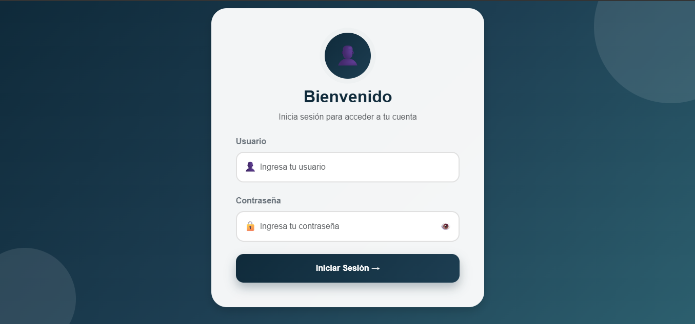
Una vez en la página de inicio de sesión, siga estos pasos:
- Ingrese su correo electrónico registrado en el campo "Correo"
- Ingrese su contraseña en el campo "Contraseña"
- Haga clic en el botón "Iniciar Sesión"
- Si los datos son correctos, será redirigido al Dashboard del sistema
• Correo electrónico válido
• Contraseña correcta (mayúsculas y minúsculas tienen importancia)
5.3 Error de Autenticación
Si recibe un mensaje de error al intentar iniciar sesión, verifique:
| Error | Solución |
|---|---|
| ❌ "Usuario o contraseña incorrectos" | Verifique que el correo sea exactamente igual al registrado. Respete mayúsculas/minúsculas en la contraseña. |
| ❌ "Token requerido" | Los datos llegaron correctamente, pero no se pudo generar el token. Intente de nuevo en unos momentos. |
| ❌ "Token expirado" | Su sesión ha caducado. Vuelva a iniciar sesión normalmente. Las sesiones duran 30 minutos de inactividad. |
| ❌ "Fallo de conexión" | Verifique su conexión a internet. Limpie el caché del navegador (Ctrl+Shift+Supr). |
5.4 Cierre de Sesión
Para cerrar sesión:
- Localice el botón de menú de usuario en la esquina superior derecha
- Haga clic en "Cerrar Sesión"
- Será redirigido a la página de login
- Su sesión será cancelada completamente
6. MÓDULO ADMINISTRADOR
6.1 Descripción del Rol
El Administrador es el usuario con máximo nivel de acceso en el sistema. Tiene responsabilidad total sobre:
- Gestión operativa del condominio
- Control financiero y de pagos
- Comunicación con residentes
- Registro de empleados
- Generación de reportes
- Configuración general del sistema
6.2 Panel de Inicio — Dashboard
El Dashboard es la primera pantalla que ve al iniciar sesión. Muestra un resumen de la situación actual del condominio.
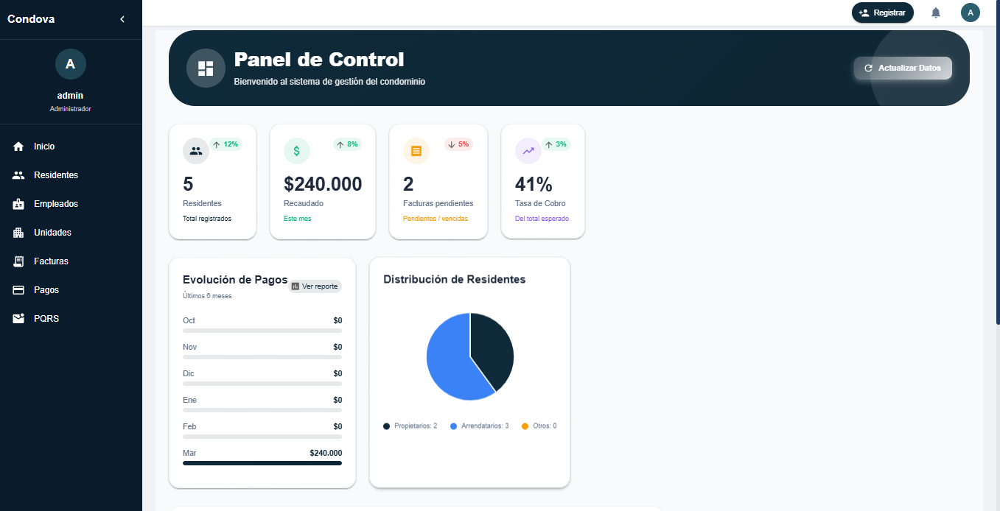
6.2.1 Componentes del Dashboard
• Total de Residentes: Número total de personas registradas
• Total de Pagos: Suma en pesos de todos los pagos recibidos
• Solicitudes Pendientes: Cantidad de solicitudes sin tratar
• Tasa de Recolección: Porcentaje de pagos cobrados vs. esperados
6.2.2 Acciones en el Dashboard
| Acción | Descripción |
|---|---|
| Refrescar datos | Actualiza la información en tiempo real - Botón 🔄 |
| Ver estadísticas completas | Accede a reportes detallados - Botón 📊 |
| Crear nuevo comunicado | Accede al módulo de comunicados - Botón ✏️ |
6.3 Gestión de Unidades Habitacionales
La Gestión de Unidades permite administrar todas las unidades del condominio: apartamentos, casas, locales, etc.
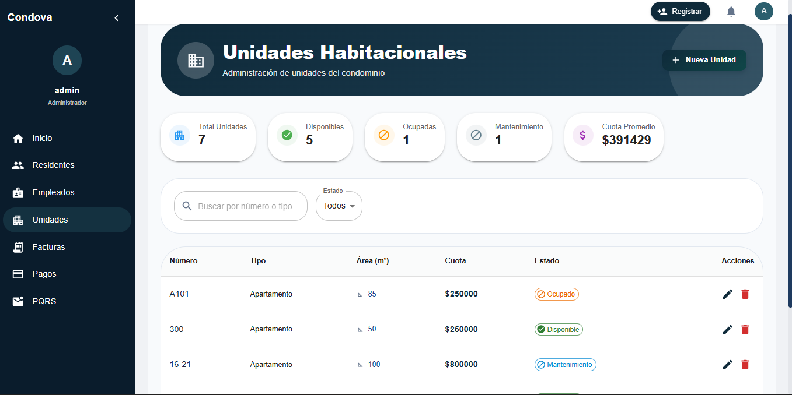
6.3.1 Ver Listado de Unidades
Acceso: Menu principal → Unidades
Tabla con todas las unidades mostrando:
- Número de Unidad: Identificador único (Ej: 101, 202, 301)
- Tipo de Unidad: Apartamento, Casa, Local, Suite, etc.
- Área: Metros cuadrados de la unidad
- Estado: Disponible, Ocupada, Mantenimiento
- Valor de Cuota: Valor mensual a pagar por esta unidad
6.3.2 Crear Nueva Unidad
Pasos:
- Haga clic en el botón "➕ Nueva Unidad"
- Complete el formulario con:
- Tipo de Unidad (Apartamento, Casa, Local, etc.)
- Número (Ej: 101)
- Área (Ej: 120.5 m²)
- Valor de Cuota (Ej: 500000)
- Estado (Disponible, Ocupada o Mantenimiento)
- Haga clic en "Guardar"
- La nueva unidad aparecerá en el listado
6.3.3 Editar y Eliminar Unidades
Para editar: Haga clic en ✏️ Editar, modifique los campos y guarde.
Para eliminar: Haga clic en 🗑️ Eliminar y confirme la acción.
6.4 Gestión de Residentes
Módulo para registrar, actualizar y gestionar la información de todos los residentes del condominio.
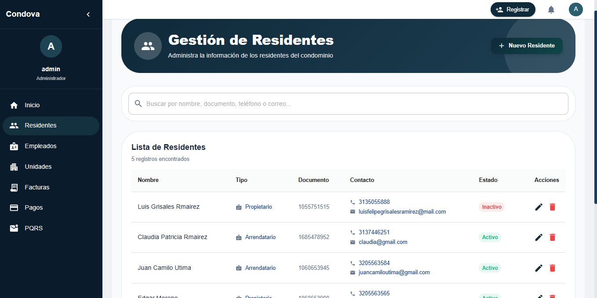
6.4.1 Ver Listado de Residentes
Acceso: Menu principal → Residentes
Tabla con información de cada residente incluyendo:
- Nombre y Apellido
- Tipo (Propietario o Arrendatario)
- Documento
- Teléfono y Correo
- Estado (Activo o Inactivo)
6.4.2 Registrar Nuevo Residente
Pasos:
- Haga clic en "➕ Nuevo Residente"
- Complete:
- Nombre (Ej: Juan)
- Apellido (Ej: Pérez)
- Tipo de Residente (Propietario o Arrendatario)
- Documento (sin espacios)
- Teléfono
- Correo
- Estado (Activo)
- Haga clic en "Guardar"
6.5 Gestión de Pagos
Registre, verifique y controle todos los pagos del condominio.
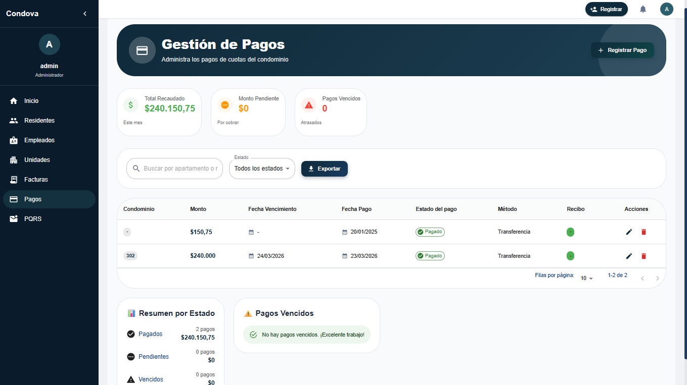
6.5.1 Ver Estado de Pagos
Acceso: Menu principal → Pagos
| Estado | Significado |
|---|---|
| 🟢 Pagado | Pago recibido y confirmado |
| 🟡 Pendiente | Pago registrado pero no confirmado |
| 🔴 Vencido | Pago que no fue realizado en la fecha esperada |
6.5.2 Registrar Nuevo Pago
- Haga clic en "➕ Nuevo Pago"
- Complete:
- Fecha de Pago
- Monto en pesos
- Método de Pago (Transferencia, Efectivo, Cheque, etc.)
- Estado del Pago
- Factura Asociada
- Haga clic en "Guardar"
6.6 Gestión de Facturas
Las facturas son documentos que se generan para cobrar la cuota mensual de cada unidad.
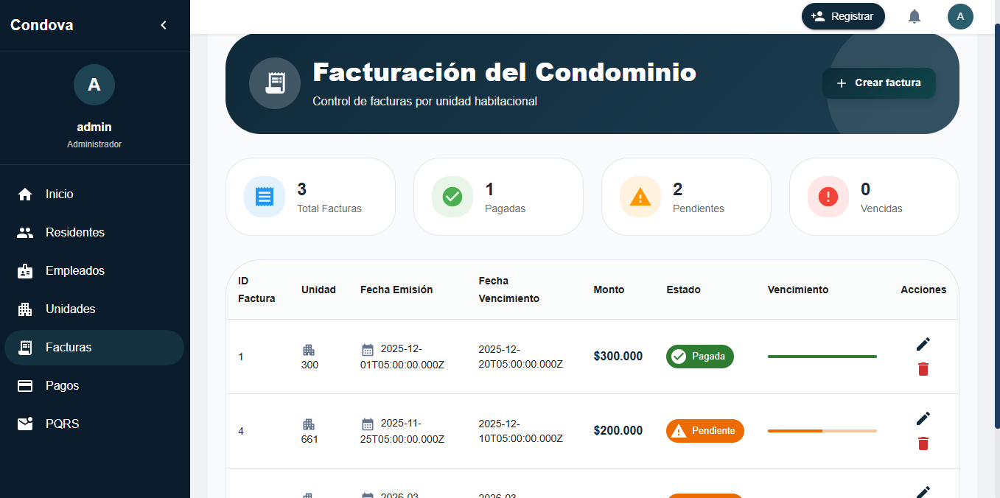
6.6.1 Ver Listado de Facturas
| Campo | Descripción |
|---|---|
| ID Factura | Número identificador |
| Unidad | Número de la unidad |
| Fecha Emisión | Cuándo se creó |
| Fecha Vencimiento | Límite de pago |
| Monto | Valor a pagar |
| Estado | Pagada, Pendiente, Vencida |
6.6.2 Crear Nueva Factura
- Haga clic en "➕ Nueva Factura"
- Seleccione la Unidad
- Ingrese:
- Fecha de Emisión
- Fecha de Vencimiento
- Monto a cobrar
- Estado de Factura
- Haga clic en "Guardar"
6.7 Gestión de Comunicados
Los comunicados son avisos, anuncios y mensajes que la administración quiere compartir. Haga clic en el ícono 🔔 en la parte superior derecha para acceder al menú de comunicados.
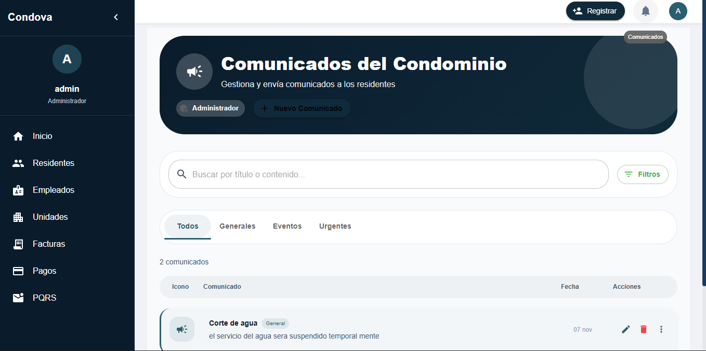
6.7.1 Crear Nuevo Comunicado
- Menu → Comunicados
- Haga clic en "➕ Nuevo Comunicado"
- Complete:
- Tipo (Urgente, Evento, Reglamento, Aviso)
- Título
- Descripción
- Fecha
- Destinatarios (Todos, Propietarios, Arrendatarios)
- Adjunto (opcional)
- Haga clic en "Enviar Comunicado"
6.7.2 Tipos de Comunicados
| Tipo | Icono | Uso |
|---|---|---|
| Urgente | ⚠️ | Situaciones emergentes (falla de agua, corte de luz) |
| Evento | 📅 | Reuniones, asambleas |
| Reglamento | 📋 | Normas y regulaciones |
| Aviso | 📢 | Información general |
6.8 Gestión de Ingresos y Egresos
6.8.1 Ingresos
¿Qué es un Ingreso? Dinero que entra al condominio (pagos de residentes, multas, intereses, etc.)
Para registrar:
- Menu → Ingresos
- Haga clic en "➕ Nuevo Ingreso"
- Complete: Fecha, Concepto, Monto
- Haga clic en "Guardar"
6.8.2 Egresos
¿Qué es un Egreso? Dinero que sale del condominio (salarios, servicios, mantenimiento, etc.)
Para registrar:
- Menu → Egresos
- Haga clic en "➕ Nuevo Egreso"
- Complete: Fecha, Concepto, Monto, Empleado (opcional)
- Haga clic en "Guardar"
6.9 Gestión de Empleados
Registre y administre el personal que trabaja en el condominio.
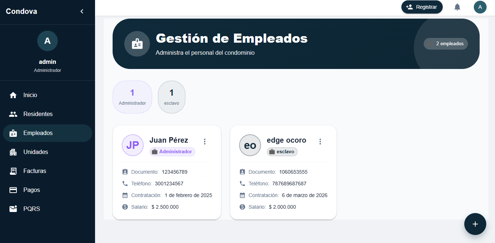
6.9.1 Registrar Nuevo Empleado
- Menu → Empleados
- Haga clic en "➕ Nuevo Empleado"
- Complete:
- Nombre y Apellido
- Cargo (Conserje, Portero, Jardinero, etc.)
- Documento
- Teléfono
- Fecha de Contratación
- Salario
- Haga clic en "Guardar"
6.10 Gestión de PQRS
Sistema de Peticiones, Quejas, Reclamos y Sugerencias. Permite la comunicación bidireccional entre residentes, propietarios y administración.
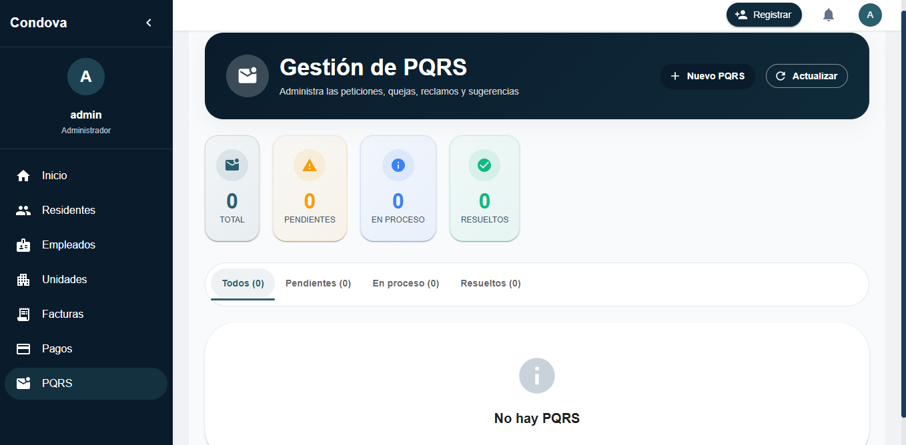
6.10.1 Ver PQRS Recibidas (Administrador)
Acceso: Sidebar → PQRS
Como administrador, puedes ver todas las PQRS enviadas por propietarios y residentes:
- Estado: Pendiente, En proceso, Resuelta, Cerrada
- Tipo: Petición, Queja, Reclamo, Sugerencia
- Remitente: Nombre del propietario/residente
- Fecha: Cuándo fue enviada
- Asunto: Título de la PQRS
- Acciones: Ver detalles, Responder, Cambiar estado
6.10.2 Responder a una PQRS
Pasos:
- Haga clic en "👁️ Ver" en la PQRS deseada
- Lea el contenido completo de la PQRS
- Haga clic en "Responder"
- Escriba su respuesta detallada
- Cambie el estado si es necesario:
- Pendiente → En proceso
- En proceso → Resuelta
- Resuelta → Cerrada
- Haga clic en "Enviar Respuesta"
6.10.3 Enviar PQRS (Propietarios)
Los propietarios pueden enviar PQRS al administrador:
Acceso: Sidebar → PQRS → Enviar PQRS al Administrador
Pasos:
- Seleccione el Tipo:
- Petición: Solicitud de información o acción
- Queja: Expresión de insatisfacción
- Reclamo: Demanda formal por incumplimiento
- Sugerencia: Propuesta de mejora
- Escriba el Asunto (título breve)
- Describa detalladamente la Descripción
- Haga clic en "Enviar PQRS al Administrador"
6.10.4 Gestionar PQRS de Residentes (Propietarios)
Los propietarios pueden gestionar las PQRS enviadas por sus residentes:
Acceso: Sidebar → PQRS → PQRS Recibidas de Residentes
- Ver PQRS enviadas por residentes de sus unidades
- Responder directamente a los residentes
- Cambiar estados de las PQRS
- Comunicarse con el administrador si es necesario
7. MÓDULO PROPIETARIO
7.1 Descripción del Rol
El Propietario (Copropietario) es el dueño de una o más unidades en el condominio. Sus funciones son:
- Consultar estado de sus pagos
- Ver mis unidades
- Recibir y leer comunicados
- Actualizar información personal
- Ver facturas y estado de cuenta
7.2 Dashboard Propietario
Al iniciar sesión, el propietario ve un dashboard personalizado con:
- Mis Unidades: Número de unidades que posee
- Estado de Cuenta: Monto adeudado o saldo disponible
- Pagos Previos: Próxima fecha de pago
- Comunicados Nuevos: Cantidad de avisos sin leer
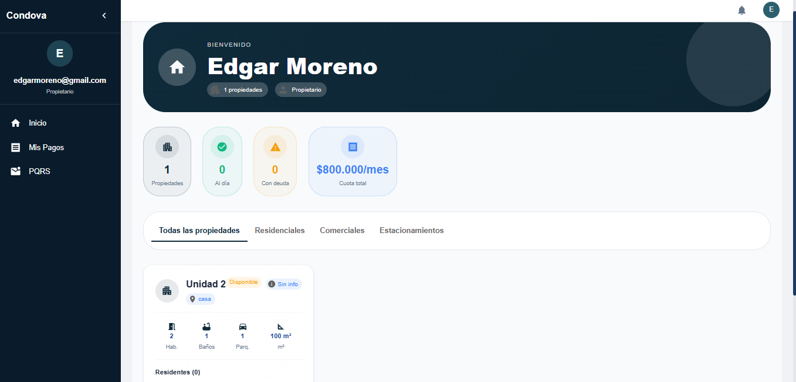
7.3 Mis Unidades
Al acceder a "Mis Unidades", verá un listado de las unidades que posee con:
- Número de Unidad
- Tipo, Área y Valor de Cuota
- Residentes actuales (si está ocupada)
- Último pago realizado
7.4 Mis Pagos
Esta es la sección más importante para el propietario.
Donde el propietario puede gestionar y visualizar todos sus pagos de gastos comunes en un solo lugar.
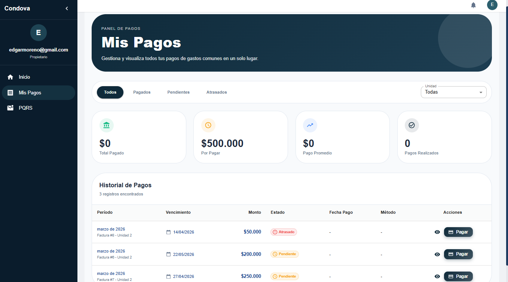
El propietario puede visualizar:
| Concepto | Descripción |
|---|---|
| Saldo Anterior | Lo que debía el mes pasado |
| Cuota Mensual | Monto a pagar este mes |
| Pagos pendientes | Cantidad de pagos pendientes |
| Saldo Actual | Lo que debe ahora |
| Estado de pagos | Estado de cada pago |
| Saldo Actual | Lo que debe ahora |
| Historial de todos los pagos | Registro completo de pagos realizados |
7.4.1 Descargar Recibos
Para obtener un recibo de un pago:
- Haga clic en el botón 📥 Descargar Recibo
- Se descargará un PDF con el comprobante
- Úselo para sus registros contables
7.5 Mis Facturas
Ver todas las facturas (cobros) que ha recibido.
7.5.1 Estados de Factura
- 🟢 Pagada: Factura ya fue pagada
- 🟡 Pendiente: Factura sin pagar pero dentro del plazo
- 🔴 Vencida: Factura que pasó la fecha de vencimiento
7.5.2 Acciones en Facturas
- 👁️ Ver: Consultar detalles
- 📥 Descargar PDF: Obtener copia
- 💳 Pagar Ahora: Registrar un pago
7.6 Comunicados
Sección donde ve todos los avisos y comunicaciones de la administración.
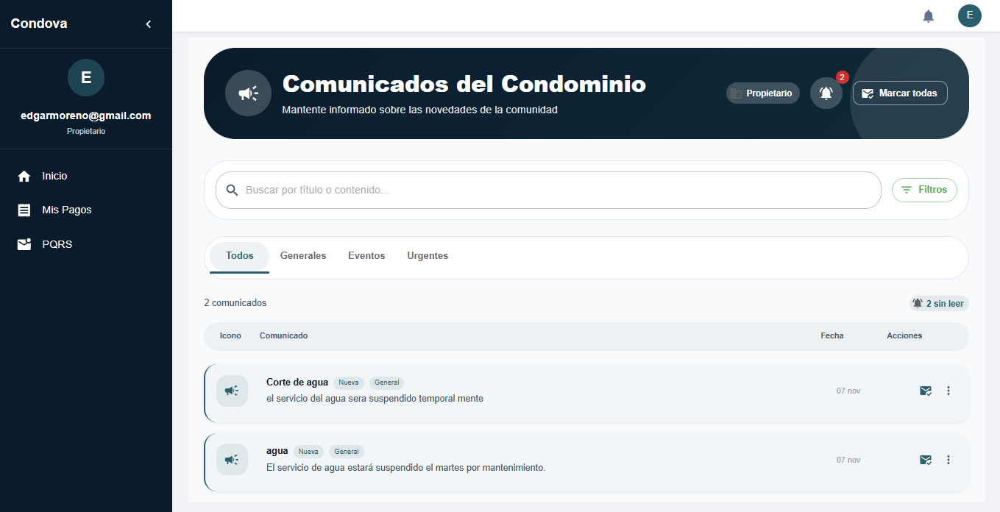
7.6.1 Ver y Leer Comunicados
- Menu → Comunicados
- Vea la lista de comunicados con tipo, título y fecha
- Haga clic en uno para leer el contenido completo
- Descargue adjuntos si existen
7.7 Mi Perfil
Actualizar información personal y contraseña.
Para ingresar al perfil del propietario debe ir a la parte superior derecha donde aparece el circulo con la incial y alli mismo mostrara la opcion para cerrar sesión.
Sección personal para actualizar información y contraseña.
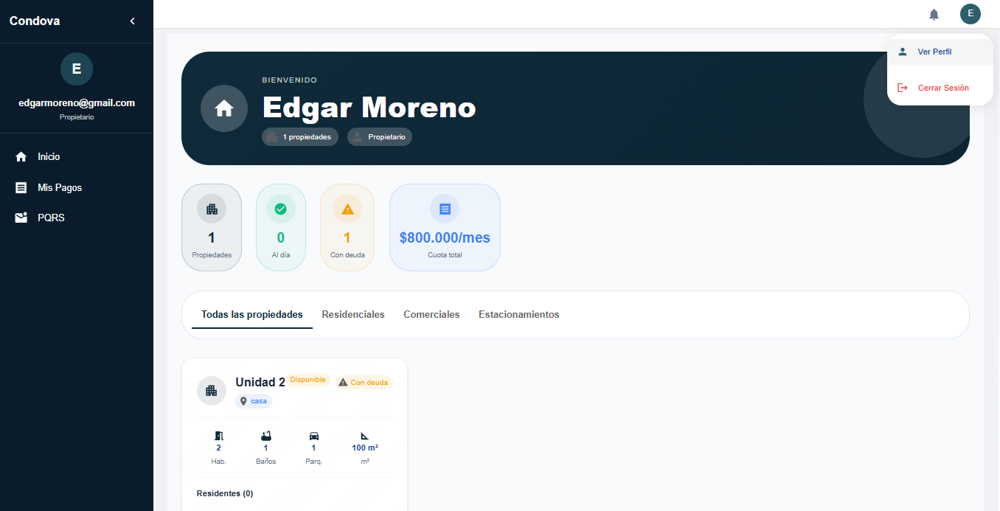
Podra visualizar:
- Información de personal
- Número de Unidad (Ej: 302)
- Tipo (Apartamento, Casa, etc.)
- Información de habitantes, mascotas y vehículos en la unidad
- Actualizar información
8. MÓDULO RESIDENTE
8.1 Descripción del Rol
El Residente es una persona que vive en el condominio pero no es propietario (generalmente arrendatario). Sus funciones son:
- Recibir y leer comunicados
- Consultar información de su unidad
- Actualizar información personal
- Acceso limitado a información general
8.2 Dashboard Residente
Al iniciar sesión, el residente ve un dashboard básico con:
- Bienvenida personalizada
- Mi Unidad: Número de unidad donde vive
- Comunicados Nuevos: Cantidad de avisos sin leer
- Información de Contacto: Número de emergencia
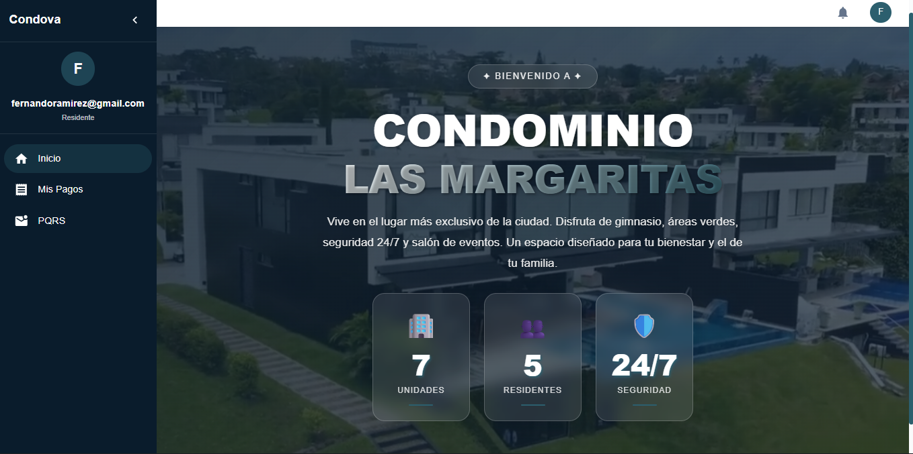
8.3 Pagos
Donde el residente puede gestionar y visualizar todos sus pagos de gastos comunes en un solo lugar.
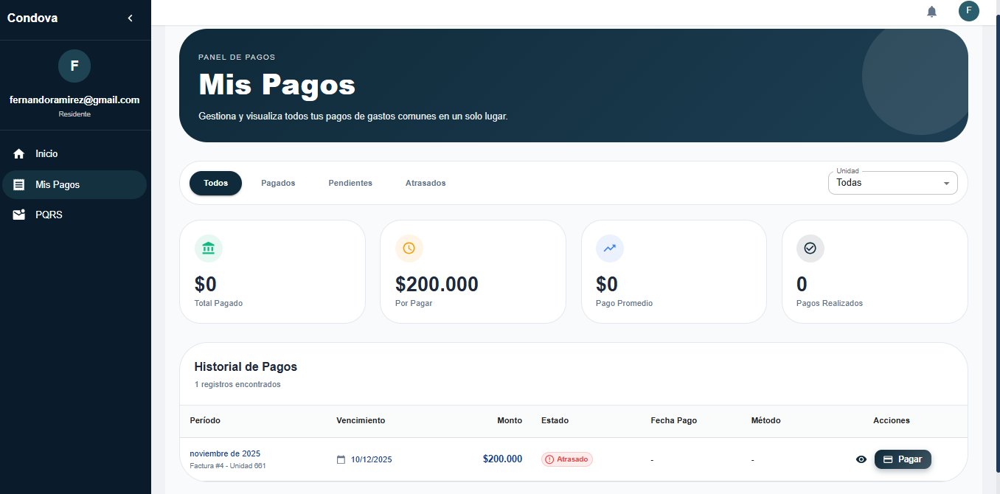
El residente puede visualizar:
| Concepto | Descripción |
|---|---|
| Saldo Anterior | Lo que debía el mes pasado |
| Cuota Mensual | Monto a pagar este mes |
| Pagos pendientes | Cantidad de pagos pendientes |
| Saldo Actual | Lo que debe ahora |
| Estado de pagos | Estado de cada pago |
| Saldo Actual | Lo que debe ahora |
| Historial de todos los pagos | Registro completo de pagos realizados |
8.4 Comunicados
La sección principal del residente, los comunicados son avisos, anuncios y mensajes que la administración quiere compartir. Haga clic en el ícono 🔔 en la parte superior derecha para acceder al menú de comunicados.
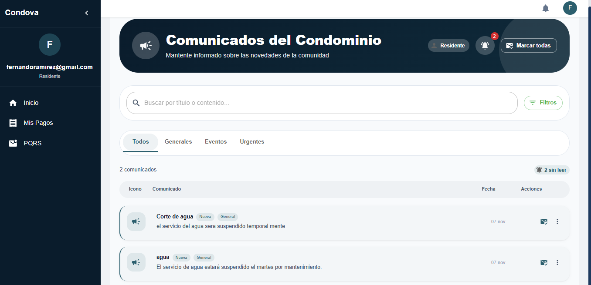
8.4.1 Ver Comunicados
Acceso: Menu → Comunicados
Verá un listado con los comunicados clasificados por:
- Tipo (Urgente ⚠️, Evento 📅, Reglamento 📋, Aviso 📢)
- Título
- Fecha de envío
- Si ya fue leído ✅ o no ❌
9.4.2 Leer un Comunicado
- Haga clic en el comunicado que desea leer
- Se abrirá una ventana con:
- Título e icono de tipo
- Texto completo del comunicado
- Fecha y hora de envío
- Archivos adjuntos (si existen)
- Lea con calma
- Cierre la ventana cuando termine
8.5 Mi Perfil
Para ingresar al perfil del residente debe ir a la parte superior derecha donde aparece el circulo con la incial y alli mismo mostrara la opcion para cerrar sesión.
Sección personal para actualizar información y contraseña.
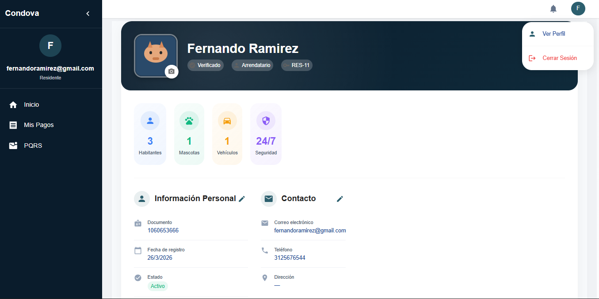
Podra visualizar:
- Información de personal
- Número de Unidad (Ej: 302)
- Tipo (Apartamento, Casa, etc.)
- Información de habitantes, mascotas y vehículos en la unidad
- Actualizar información
9. SOPORTE Y CONTACTO
9.1 Canales de Soporte Disponibles
Cuando necesite ayuda, puede contactarnos por:
| Canal | Detalles |
|---|---|
| soporte@condominio.local | |
| 📞 Teléfono | +57 (1) 1234-5678 |
| 💬 Chat en Línea | Disponible en horario laboral (8 AM - 6 PM) |
| 🏢 Presencial | Oficina de Administración - Lunes a Viernes 9 AM - 5 PM |
9.2 Recomendaciones para Reportar un Problema
✅ Actualizar la página (Presione F5)
✅ Limpiar caché del navegador
✅ Probar en otro navegador
✅ Verificar su conexión a internet
✅ Cerrar y abrir sesión nuevamente
AL reportar, proporcione:
- Descripción clara: ¿Qué módulo? ¿Qué hace exactamente?
- Capturas de pantalla: Del problema y del mensaje de error
- Información técnica:
- Navegador (Chrome, Firefox, Safari, Edge)
- Dispositivo (Computadora, tablet, celular)
- Sistema operativo
- Acciones realizadas: Paso a paso
- Hora de ocurrencia: Cuándo sucedió
9.3 Preguntas Frecuentes (FAQ)
P: ¿Cuánto tiempo tarda en procesarse un pago?
R: Después de registrarse, el pago se marca como "Pendiente" hasta que sea confirmado por administración (generalmente 1-2 días).
P: ¿Puedo cambiar mi correo electrónico?
R: Debe contactar a administración para cambiar su correo. Por seguridad, no se puede cambiar desde el perfil.
P: ¿Qué hago si recibo un comunicado importante pero no sale en el sistema?
R: Actualice la página (F5) o desconéctese y vuelva a conectarse. Si persiste, contacte soporte.
P: ¿Cómo descargo un comprobante de pago?
R: En "Mis Pagos", haga clic en el ícono 📥 del pago y se descargará un PDF.
P: ¿Se puede eliminar una factura?
R: Solo administrador puede eliminar facturas, y solo en casos excepcionales.
9.4 Horario de Atención
| Día | Horario | Disponibilidad |
|---|---|---|
| Lunes a Viernes | 8:00 AM - 6:00 PM | ✅ Atención Normal |
| Sábados | 9:00 AM - 1:00 PM | ⚠️ Atención Limitada |
| Domingos y Festivos | Cerrado | ❌ Solo urgencias |
GLOSARIO
| Término | Definición |
|---|---|
| Administrador | Usuario con acceso total al sistema |
| Arrendatario | Persona que vive en una unidad pero no la posee |
| Cuota | Monto mensual que debe pagar cada propietario |
| Egreso | Gasto o dinero que sale del condominio |
| Token JWT | Sistema de seguridad que verifica quién eres |
| Factura | Documento de cobro de la cuota mensual |
| Ingreso | Dinero que entra al condominio (pagos) |
| Propietario | Dueño de una o más unidades |
| Residente | Persona que vive en el condominio |
| Unidad | Unidad habitacional (apartamento, casa, etc.) |